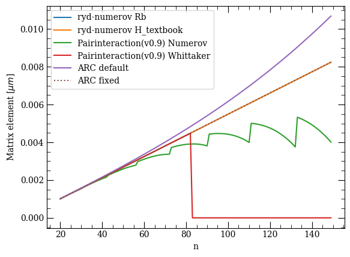
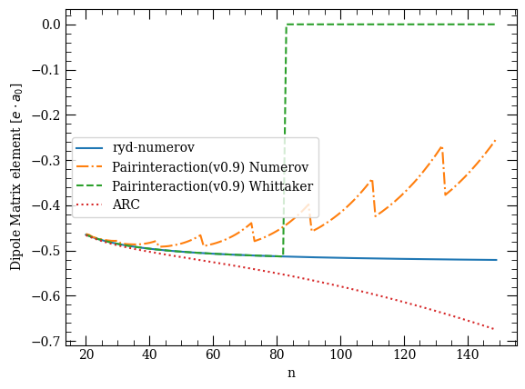
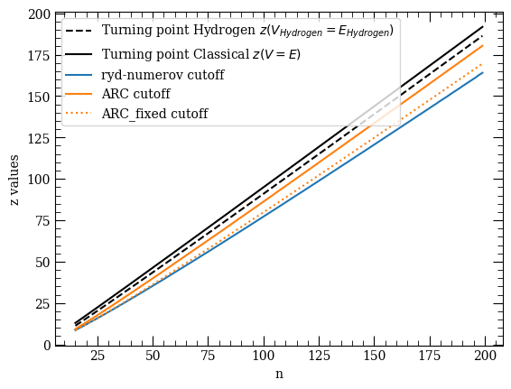
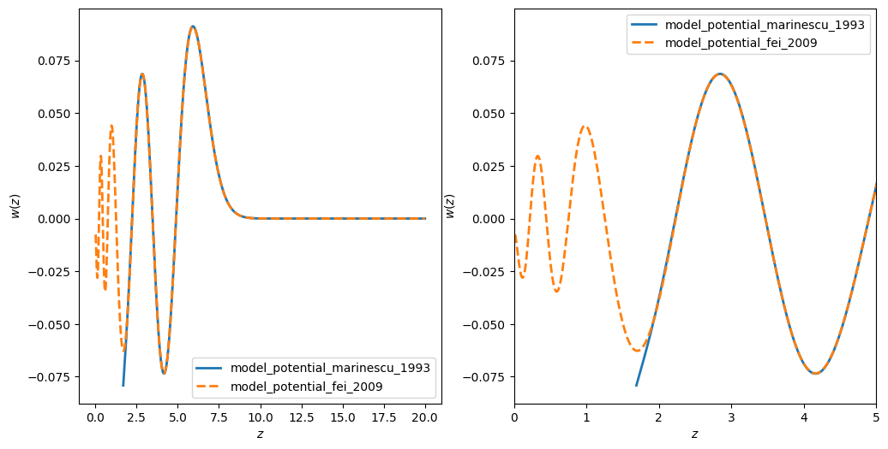

Examples
Examples
Here we show the usage of the API.
Comparisons
Some comparisons to pairinteraction and ARC
Comparison of the wavefunctions to ARC

Comparison of the radial matrix elements to pairinteraction(v0.9) and ARC

Comparison of the dipole matrix elements with pairinteraction(v0.9) and ARC

Comparison of the z_min values for circular states to Pairinteraction(v0.9) and ARC
Compare NIST energy levels data

Compare different effective model potentials
Comparison: Numerov - Whittaker
Benchmark
Some timing benchmarks.